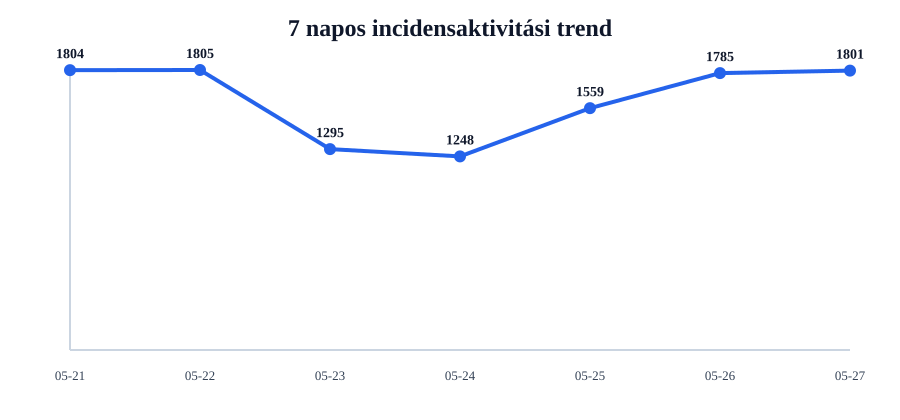
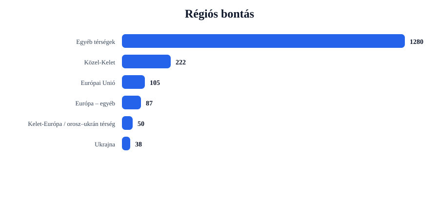
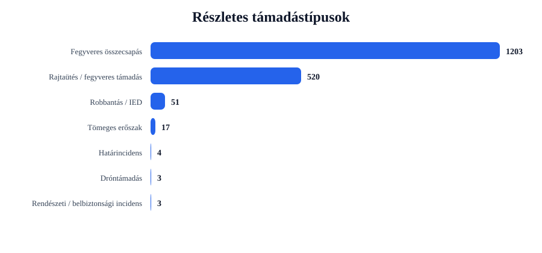
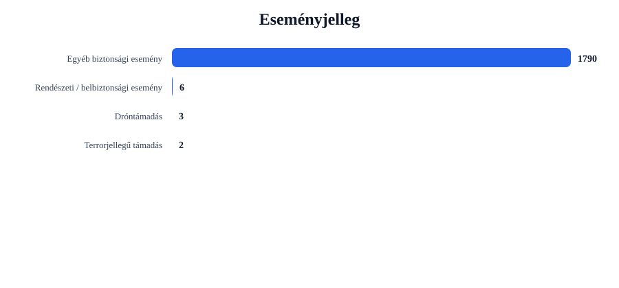

Rövid napi értékelés
Az incidensek száma emelkedett: +16 esemény, 0.9% növekedés.
A legtöbb találat ehhez az országhoz kapcsolódott: United States (625 esemény).
A legerősebb regionális súlypont: Egyéb térségek (1280 esemény).
A leggyakoribb részletes támadástípus: Fegyveres összecsapás (1203 találat).
A leggyakoribb eseményjelleg: Egyéb biztonsági esemény (1790 találat).
A drón-, terrorjellegű és háborús események felismerése kulcsszavas besorolással történik. Ez jó elemzési szűrő, de kézi ellenőrzést továbbra is igényelhet.
Régiós helyzetkép
Európai Unió
Azonosított események száma: 105. Leginkább érintett országok: Ireland (16), Germany (12), Italy (12).
Domináns támadástípusok: Fegyveres összecsapás (70), Rajtaütés / fegyveres támadás (32), Robbantás / IED (2). Domináns eseményjelleg: Egyéb biztonsági esemény (103), Terrorjellegű támadás (2).
| Cím | Ország | Helyszín | Részletes típus | Eseményjelleg | Forrás |
|---|---|---|---|---|---|
| fight – Grift, Niedersachsen, Germany | Germany | Grift, Niedersachsen, Germany | Robbantás / IED | Terrorjellegű támadás | atlantablackstar.com |
| fight – Lower Saxony, Niedersachsen, Germany | Germany | Lower Saxony, Niedersachsen, Germany | Robbantás / IED | Terrorjellegű támadás | edition.cnn.com |
| fight – Spain | Spain | Spain | Fegyveres összecsapás | Egyéb biztonsági esemény | www.hypebot.com |
| fight – France | France | France | Fegyveres összecsapás | Egyéb biztonsági esemény | www.14news.com |
| fight – Paris, France (general), France | France | Paris, France (general), France | Fegyveres összecsapás | Egyéb biztonsági esemény | www.caughtoffside.com |
Ukrajna
Azonosított események száma: 38. Leginkább érintett országok: Ukraine (38).
Domináns támadástípusok: Robbantás / IED (26), Fegyveres összecsapás (7), Rajtaütés / fegyveres támadás (5). Domináns eseményjelleg: Egyéb biztonsági esemény (38).
| Cím | Ország | Helyszín | Részletes típus | Eseményjelleg | Forrás |
|---|---|---|---|---|---|
| fight – Kharkiv, Kharkivs'ka Oblast', Ukraine | Ukraine | Kharkiv, Kharkivs'ka Oblast', Ukraine | Robbantás / IED | Egyéb biztonsági esemény | www.globalissues.org |
| fight – Luhansk, Luhans'ka Oblast', Ukraine | Ukraine | Luhansk, Luhans'ka Oblast', Ukraine | Robbantás / IED | Egyéb biztonsági esemény | www.unionleader.com |
| fight – Starobelsk, Luhans'ka Oblast', Ukraine | Ukraine | Starobelsk, Luhans'ka Oblast', Ukraine | Robbantás / IED | Egyéb biztonsági esemény | www.naturalnews.com |
| fight – Starobilsk, Luhans'ka Oblast', Ukraine | Ukraine | Starobilsk, Luhans'ka Oblast', Ukraine | Robbantás / IED | Egyéb biztonsági esemény | www.ynetnews.com |
| fight – Vilcha, Kyyivs'ka Oblast', Ukraine | Ukraine | Vilcha, Kyyivs'ka Oblast', Ukraine | Robbantás / IED | Egyéb biztonsági esemény | www.dailykos.com |
Balkán
Azonosított események száma: 19. Leginkább érintett országok: Turkey (11), Bosnia-Herzegovina (2), Kosovo (2).
Domináns támadástípusok: Fegyveres összecsapás (17), Rajtaütés / fegyveres támadás (2). Domináns eseményjelleg: Egyéb biztonsági esemény (19).
| Cím | Ország | Helyszín | Részletes típus | Eseményjelleg | Forrás |
|---|---|---|---|---|---|
| fight – Istanbul, Istanbul, Turkey | Turkey | Istanbul, Istanbul, Turkey | Fegyveres összecsapás | Egyéb biztonsági esemény | www.hurriyetdailynews.com |
| assault – Turkey | Turkey | Turkey | Rajtaütés / fegyveres támadás | Egyéb biztonsági esemény | peoplesreview.com.np |
| fight – Ankara, Ankara, Turkey | Turkey | Ankara, Ankara, Turkey | Fegyveres összecsapás | Egyéb biztonsági esemény | en.tempo.co |
| fight – Efes, Izmir, Turkey | Turkey | Efes, Izmir, Turkey | Fegyveres összecsapás | Egyéb biztonsági esemény | breakingdefense.com |
| fight – Zenica, Federation of Bosnia and Herzegovina, Bosnia-Herzegovina | Bosnia-Herzegovina | Zenica, Federation of Bosnia and Herzegovina, Bosnia-Herzegovina | Fegyveres összecsapás | Egyéb biztonsági esemény | hotair.com |
Közel-Kelet
Azonosított események száma: 222. Leginkább érintett országok: Israel (38), Lebanon (36), Iran (34).
Domináns támadástípusok: Fegyveres összecsapás (158), Rajtaütés / fegyveres támadás (54), Tömeges erőszak (8). Domináns eseményjelleg: Egyéb biztonsági esemény (220), Dróntámadás (2).
| Cím | Ország | Helyszín | Részletes típus | Eseményjelleg | Forrás |
|---|---|---|---|---|---|
| fight – Shahed, Fars, Iran | Iran | Shahed, Fars, Iran | Dróntámadás | Dróntámadás | www.watoday.com.au |
| assault – Shahed, Fars, Iran | Iran | Shahed, Fars, Iran | Dróntámadás | Dróntámadás | www.bworldonline.com |
| fight – Iran | Iran | Iran | Fegyveres összecsapás | Egyéb biztonsági esemény | www.muskokaregion.com |
| fight – Tehran, Tehran, Iran | Iran | Tehran, Tehran, Iran | Fegyveres összecsapás | Egyéb biztonsági esemény | www.austinglobe.com |
| fight – Israel | Israel | Israel | Fegyveres összecsapás | Egyéb biztonsági esemény | www.al-monitor.com |
Kelet-Európa / orosz–ukrán térség
Azonosított események száma: 50. Leginkább érintett országok: Russia (46), Belarus (3), Moldova (1).
Domináns támadástípusok: Robbantás / IED (23), Fegyveres összecsapás (18), Rajtaütés / fegyveres támadás (8). Domináns eseményjelleg: Egyéb biztonsági esemény (50).
| Cím | Ország | Helyszín | Részletes típus | Eseményjelleg | Forrás |
|---|---|---|---|---|---|
| fight – Oreshnik, Kirovskaya Oblast', Russia | Russia | Oreshnik, Kirovskaya Oblast', Russia | Robbantás / IED | Egyéb biztonsági esemény | www.gdnonline.com:443 |
| fight – Volgograd, Volgogradskaya Oblast', Russia | Russia | Volgograd, Volgogradskaya Oblast', Russia | Robbantás / IED | Egyéb biztonsági esemény | www.eng.kavkaz-uzel.eu |
| fight – Kursk, Kurskaya Oblast', Russia | Russia | Kursk, Kurskaya Oblast', Russia | Robbantás / IED | Egyéb biztonsági esemény | www.rightspeak.net |
| fight – Taganrog, Rostovskaya Oblast', Russia | Russia | Taganrog, Rostovskaya Oblast', Russia | Robbantás / IED | Egyéb biztonsági esemény | www.kyivpost.com |
| assault – Oreshnik, Kirovskaya Oblast', Russia | Russia | Oreshnik, Kirovskaya Oblast', Russia | Robbantás / IED | Egyéb biztonsági esemény | voiceofvienna.org |
Európa – egyéb
Azonosított események száma: 87. Leginkább érintett országok: United Kingdom (75), Norway (3), Switzerland (3).
Domináns támadástípusok: Fegyveres összecsapás (63), Rajtaütés / fegyveres támadás (22), Határincidens (1). Domináns eseményjelleg: Egyéb biztonsági esemény (87).
| Cím | Ország | Helyszín | Részletes típus | Eseményjelleg | Forrás |
|---|---|---|---|---|---|
| fight – London, London, City of, United Kingdom | United Kingdom | London, London, City of, United Kingdom | Fegyveres összecsapás | Egyéb biztonsági esemény | www.dailymail.com |
| fight – United Kingdom | United Kingdom | United Kingdom | Fegyveres összecsapás | Egyéb biztonsági esemény | nypost.com |
| assault – London, London, City of, United Kingdom | United Kingdom | London, London, City of, United Kingdom | Rajtaütés / fegyveres támadás | Egyéb biztonsági esemény | abc17news.com |
| assault – United Kingdom | United Kingdom | United Kingdom | Rajtaütés / fegyveres támadás | Egyéb biztonsági esemény | www.amnesty.org.au |
| fight – Golders Green, Barnet, United Kingdom | United Kingdom | Golders Green, Barnet, United Kingdom | Fegyveres összecsapás | Egyéb biztonsági esemény | www.aol.co.uk |
Egyéb térségek
Azonosított események száma: 1280. Leginkább érintett országok: United States (625), India (140), Nigeria (67).
Domináns támadástípusok: Fegyveres összecsapás (870), Rajtaütés / fegyveres támadás (397), Tömeges erőszak (6). Domináns eseményjelleg: Egyéb biztonsági esemény (1273), Rendészeti / belbiztonsági esemény (6), Dróntámadás (1).
| Cím | Ország | Helyszín | Részletes típus | Eseményjelleg | Forrás |
|---|---|---|---|---|---|
| fight – Tuas, Singapore (general), Singapore | Singapore | Tuas, Singapore (general), Singapore | Dróntámadás | Dróntámadás | www.straitstimes.com |
| fight – New Jersey, United States | United States | New Jersey, United States | Fegyveres összecsapás | Egyéb biztonsági esemény | nypost.com |
| fight – California, United States | United States | California, United States | Fegyveres összecsapás | Egyéb biztonsági esemény | www.ksbw.com |
| fight – Texas, United States | United States | Texas, United States | Fegyveres összecsapás | Egyéb biztonsági esemény | www.ksbw.com |
| fight – Massachusetts, United States | United States | Massachusetts, United States | Fegyveres összecsapás | Egyéb biztonsági esemény | masslawyersweekly.com |
Grafikonos áttekintés




Top 5 kiemelt esemény
| # | Cím | Ország | Helyszín | Részletes típus | Eseményjelleg | Súly | Forrás |
|---|---|---|---|---|---|---|---|
| 1 | fight – Grift, Niedersachsen, Germany | Germany | Grift, Niedersachsen, Germany | Robbantás / IED | Terrorjellegű támadás | 26 | atlantablackstar.com |
| 2 | fight – Lower Saxony, Niedersachsen, Germany | Germany | Lower Saxony, Niedersachsen, Germany | Robbantás / IED | Terrorjellegű támadás | 26 | edition.cnn.com |
| 3 | fight – Kharkiv, Kharkivs'ka Oblast', Ukraine | Ukraine | Kharkiv, Kharkivs'ka Oblast', Ukraine | Robbantás / IED | Egyéb biztonsági esemény | 21 | www.globalissues.org |
| 4 | fight – Luhansk, Luhans'ka Oblast', Ukraine | Ukraine | Luhansk, Luhans'ka Oblast', Ukraine | Robbantás / IED | Egyéb biztonsági esemény | 21 | www.unionleader.com |
| 5 | fight – Starobelsk, Luhans'ka Oblast', Ukraine | Ukraine | Starobelsk, Luhans'ka Oblast', Ukraine | Robbantás / IED | Egyéb biztonsági esemény | 20 | www.naturalnews.com |
Napi bontások
Régiók
- Egyéb térségek1280
- Közel-Kelet222
- Európai Unió105
- Európa – egyéb87
- Kelet-Európa / orosz–ukrán térség50
- Ukrajna38
- Balkán19
Országok
- United States625
- India141
- United Kingdom75
- Nigeria67
- Canada46
- Russia46
- Australia42
- Israel38
- Ukraine38
- Lebanon36
Részletes típusok
- Fegyveres összecsapás1203
- Rajtaütés / fegyveres támadás520
- Robbantás / IED51
- Tömeges erőszak17
- Határincidens4
- Dróntámadás3
- Rendészeti / belbiztonsági incidens3
Eseményjelleg
- Egyéb biztonsági esemény1790
- Rendészeti / belbiztonsági esemény6
- Dróntámadás3
- Terrorjellegű támadás2
Források
- www.dailymail.com58
- nypost.com40
- www.yahoo.com36
- timesofindia.indiatimes.com36
- www.moneycontrol.com35
- saharareporters.com31
- economictimes.indiatimes.com28
- www.theguardian.com28
- www.winnipegfreepress.com27
- www.mirror.co.uk26
Blogra használható összefoglaló kép
Ez az automatikusan generált kép csak a négy kiemelt térséget mutatja: Európai Unió, Balkán, Közel-Kelet és Ukrajna.
Módszertani megjegyzés
Ez a jelentés nyílt forrású, automatizált adatgyűjtés alapján készül. A dróntámadások, terrorjellegű események és háborús cselekmények azonosítása kulcsszavas besorolással történik. Ez elemzési támpont, nem hivatalos minősítés.